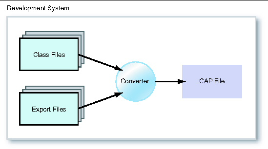
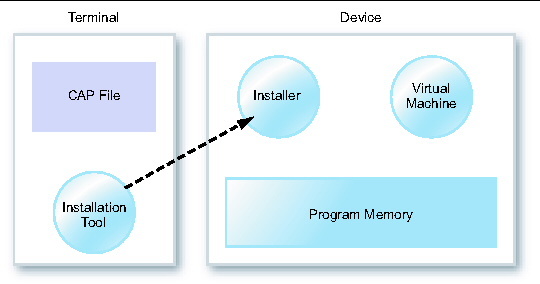

| Virtual Machine Specification, Java Card Platform, v2.2.2 |
| Virtual Machine Specification, Java Card Platform, v2.2.2 |
| C H A P T E R 1 |
|
Introduction |
Java Card technology enables programs written in the Java programming language to be run on smart cards and other small, resource-constrained devices. Developers can build and test programs using standard software development tools and environments, then convert them into a form that can be installed onto a Java Card technology-enabled device. Application software for the Java Card platform is called an applet, or more specifically, a Java Card applet or card applet (to distinguish it from browser applets).
While Java Card technology enables programs written in the Java programming language to run on smart cards, such small devices are far too under-powered to support the full functionality of the Java platform. Therefore, the Java Card platform supports only a carefully chosen, customized subset of the features of the Java platform. This subset provides features that are well-suited for writing programs for small devices and preserves the object-oriented capabilities of the Java programming language.
A simple approach to specifying a Java Card virtual machine would be to describe the subset of the features of the Java virtual machine that must be supported to allow for portability of source code across all Java Card technology enabled devices. Combining that subset specification and the information in Java Virtual Machine Specification, smart card manufacturers could construct their own Java Card technology-based implementations ("Java Card implementations"). While that approach is feasible, it has a serious drawback. The resultant platform would be missing the important feature of binary portability of Java Card applets.
The standards that define the Java platform allow for binary portability of Java programs across all Java platform implementations. This "write once, run anywhere" quality of Java programs is perhaps the most significant feature of the platform. Part of the motivation for the creation of the Java Card platform was to bring just this kind of binary portability to the smart card industry. In a world with hundreds of millions or perhaps even billions of smart cards with varying processors and configurations, the costs of supporting multiple binary formats for software distribution could be overwhelming.
This Virtual Machine Specification for the Java Card Platform, Version 2.2.2 is the key to providing binary portability. One way of understanding what this specification does is to compare it to its counterpart in the Java platform. The Java virtual machine specification defines a Java virtual machine as an engine that loads Java class files and executes them with a particular set of semantics. The class file is a central piece of the Java architecture, and it is the standard for the binary compatibility of the Java platform. The Virtual Machine Specification for the Java Card Platform, Version 2.2.2 also defines a file format that is the standard for binary compatibility for the Java Card platform: the CAP file format is the form in which software is loaded onto devices which implement a Java Card virtual machine.
The role of the Java Card virtual machine is best understood in the context of the process for production and deployment of software for the Java Card platform. There are several components that make up a Java Card system, including the Java Card virtual machine, the Converter for the Java Card platform ("Java Card Converter"), a terminal installation tool, and an installation program that runs on the device, as shown in FIGURE 1-1 and FIGURE 1-2.


Development of a Java Card applet begins as with any other Java program: a developer writes one or more Java classes, and compiles the source code with a Java compiler, producing one or more class files. The applet is run, tested and debugged on a workstation using simulation tools to emulate the device environment. Then, when an applet is ready to be downloaded to a device, the class files comprising the applet are converted to a CAP (converted applet) file using a Java Card Converter.
The Java Card Converter takes as input all of the class files which make up a Java package. A package that contains one or more non-abstract subclasses, direct or indirect, of the javacard.framework.Applet class is referred to as an applet package. Otherwise the package is referred to as a library package. The Java Card Converter also takes as input one or more export files. An export file contains name and link information for the contents of other packages that are imported by the classes being converted. When an applet or library package is converted, the converter can also produce an export file for that package.
After conversion, the CAP file is copied to a card terminal, such as a desktop computer with a card reader peripheral. Then an installation tool on the terminal loads the CAP file and transmits it to the Java Card technology-enabled device. An installation program on the device receives the contents of the CAP file and prepares the applet to be run by the Java Card virtual machine. The virtual machine itself need not load or manipulate CAP files; it need only execute the applet code found in the CAP file that was loaded onto the device by the installation program.
The division of functionality between the Java Card virtual machine and the installation program keeps both the virtual machine and the installation program small. The installation program may be implemented as a Java program and executed on top of the Java Card virtual machine. Since instructions for the Java Card platform ("Java Card instructions") are denser than typical machine code, this may reduce the size of the installer. The modularity may enable different installers to be used with a single Java Card virtual machine implementation.
One of the fundamental features of the Java virtual machine is the strong security provided in part by the class file verifier. Many devices that implement the Java Card platform may be too small to support verification of CAP files on the device itself. This consideration led to a design that enables verification on a device but does not rely on it. The data in a CAP file that is needed only for verification is packaged separately from the data needed for the actual execution of its applet. This allows for flexibility in how security is managed in an implementation.
There are several options for providing language-level security on a Java Card technology-enabled device. The conceptually simplest is to verify the contents of a CAP file on the device as it is downloaded or after it is downloaded. This option might only be feasible in the largest of devices. However, some subset of verification might be possible even on smaller devices. Other options rely on some combination of one or more of: physical security of the installation terminal, a cryptographically enforced chain of trust from the source of the CAP file, and pre-download verification of the contents of a CAP file.
The Java Card platform standards say as little as possible about CAP file installation and security policies. Since smart cards must serve as secure processors in many different systems with different security requirements, it is necessary to allow a great deal of flexibility to meet the needs of smart card issuers and users.
The standard runtime environment for the Java Card platform is the Java Card Runtime Environment. The Java Card RE consists of an implementation of the Java Card virtual machine along with the Java Card API classes. While the Java Card virtual machine has responsibility for ensuring Java language-level security, the Java Card RE imposes additional runtime security requirements on devices that implement the Java Card RE, which results in a need for additional features on the Java Card virtual machine. Throughout this document, these additional features are designated as Java Card RE-specific.
The basic runtime security feature imposed by the Java Card RE enforces isolation of applets using what is called an applet firewall. The applet firewall prevents the objects that were created by one applet from being used by another applet. This prevents unauthorized access to both the fields and methods of class instances, as well as the length and contents of arrays.
Isolation of applets is an important security feature, but it requires a mechanism to allow applets to share objects in situations where there is a need to interoperate. The Java Card RE allows such sharing using the concept of shareable interface objects. These objects provide the only way an applet can make its objects available for use by other applets. For more information about using shareable interface objects, see the description of the interface javacard.framework.Shareable in the Application Programming Interface, Java Card Platform, Version 2.2.2 specification. Some descriptions of firewall-related features make reference to the Shareable interface.
The applet firewall also protects from unauthorized use the objects owned by the Java Card RE itself. The Java Card RE can use mechanisms not reflected in the Java Card API to make its objects available for use by applets. A full description of the Java Card RE-related isolation and sharing features can be found in the Runtime Environment Specification, Java Card Platform, Version 2.2.2.
| Virtual Machine Specification, Java Card Platform, v2.2.2 | 3-11-06 |
Copyright © 2005, Sun Microsystems, Inc. All Rights Reserved.